Demographic Information
Age:
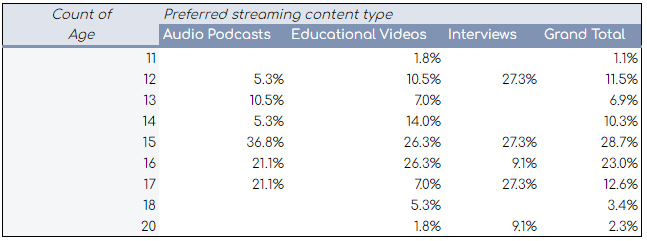
Gender:
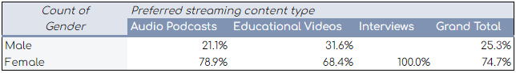
Educational attainment:
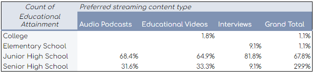
Beliefs About Music
How often do you listen to music while studying?
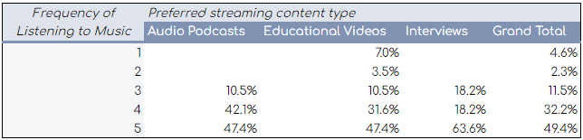
Do you believe that listening to music in general will improve your:
- productivity? 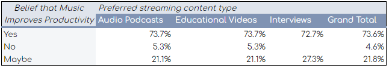
- focus? 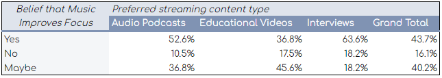
- quality of work? 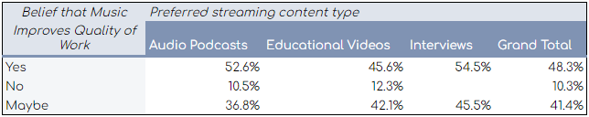
Attitudes Towards Music
Are you aware of the effects of listening to music?
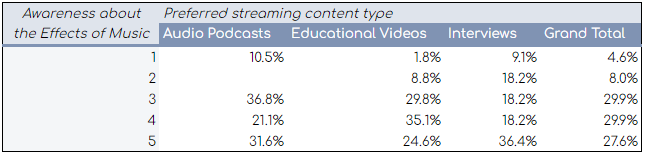
How familiar are you with Classical Music?
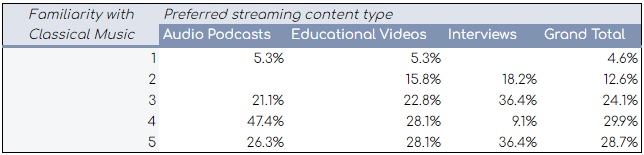
How familiar are you with Vaporwave Music?
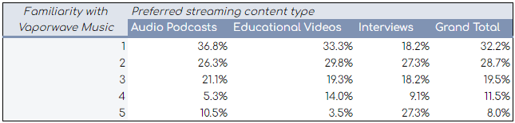
Preferences Regarding Streaming Content Types & Platforms
Which streaming content type would you prefer to watch/listen to when you want to know more about a topic?
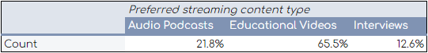
How often do you watch/listen to:
- interviews? 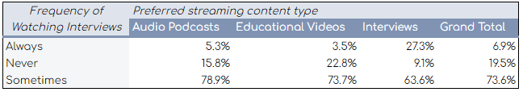
- audio podcasts? 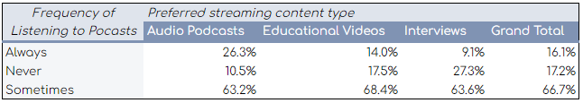
- educational videos? 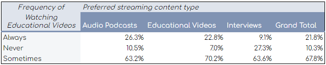
Which streaming platform/s do you prefer the most? (You may choose more than one)
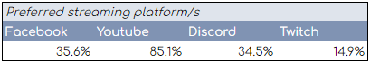